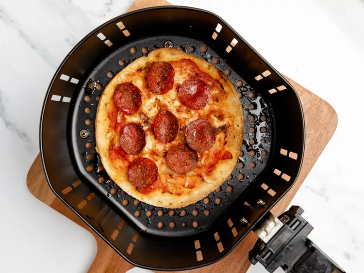

Pepperoni

Description
This is the carbonara dish. It is an italian tradition. The preperation isn't that hard
It is one of my favorite and i enjoy preparing and having that type of dish
There are some video links included on how to cook it for yourself
Ingridients
- 1 pound spaghetti
- 2 tablespoons olive oil, divided, or as needed
- 8 slices bacon, diced
- 1 onion, chopped
- 1 clove garlic, minced
- ¼ cup dry white wine
- 4 large eggs, beaten
- ½ cup grated Parmesan cheese
- salt and black pepper to taste
- 2 tablespoons chopped fresh parsley
- 2 tablespoons grated Parmesan cheese
Go Back